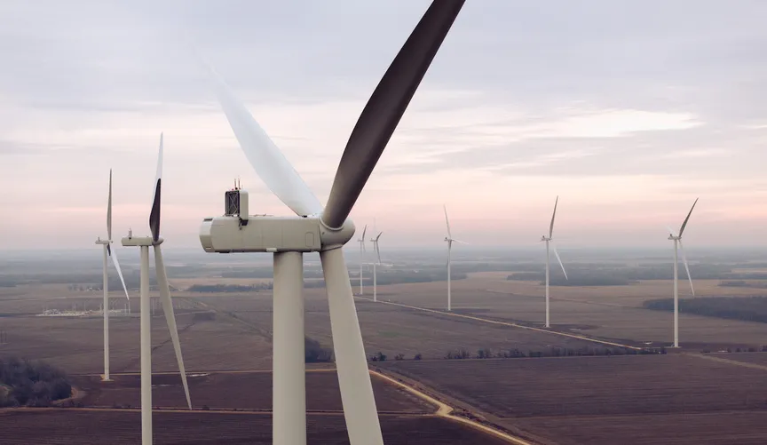
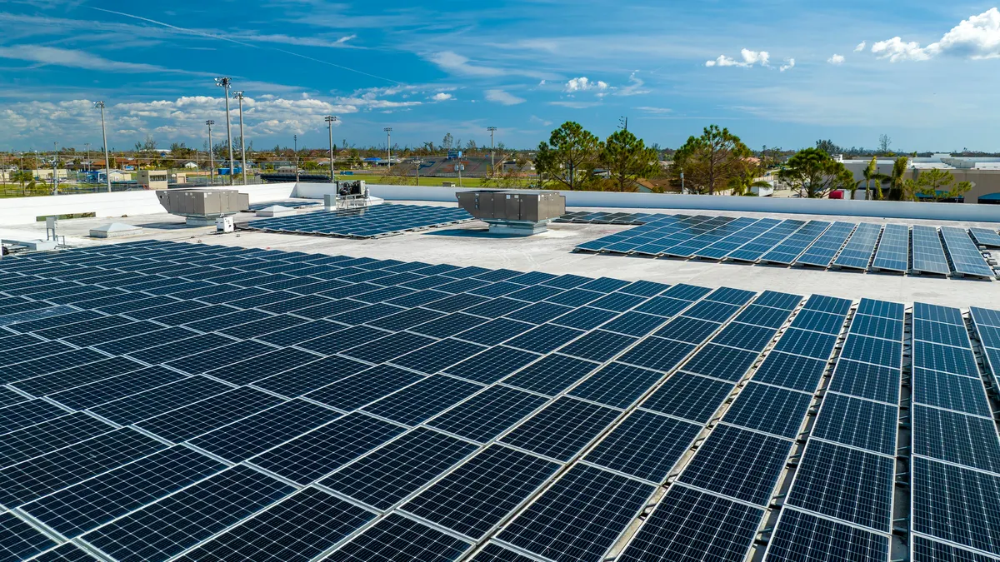

Why energy generation matters
The mix of energy sources used by a grid affects cost, reliability, efficiency, and environmental impact. A balanced system often combines different sources to meet demand throughout the day.
Many power grids have historically depended on coal, natural gas, and nuclear plants. These large facilities can generate major amounts of electricity for cities and industries.
Fossil fuels remain common, but they also raise concerns about emissions and environmental impact.


Renewable energy includes solar, wind, hydroelectric, and geothermal power. These sources reduce dependence on fossil fuels and are becoming increasingly important in modern power systems.
Renewable generation is often cleaner, but it can also be more variable, especially with changing sunlight and wind conditions.
The mix of energy sources used by a grid affects cost, reliability, efficiency, and environmental impact. A balanced system often combines different sources to meet demand throughout the day.